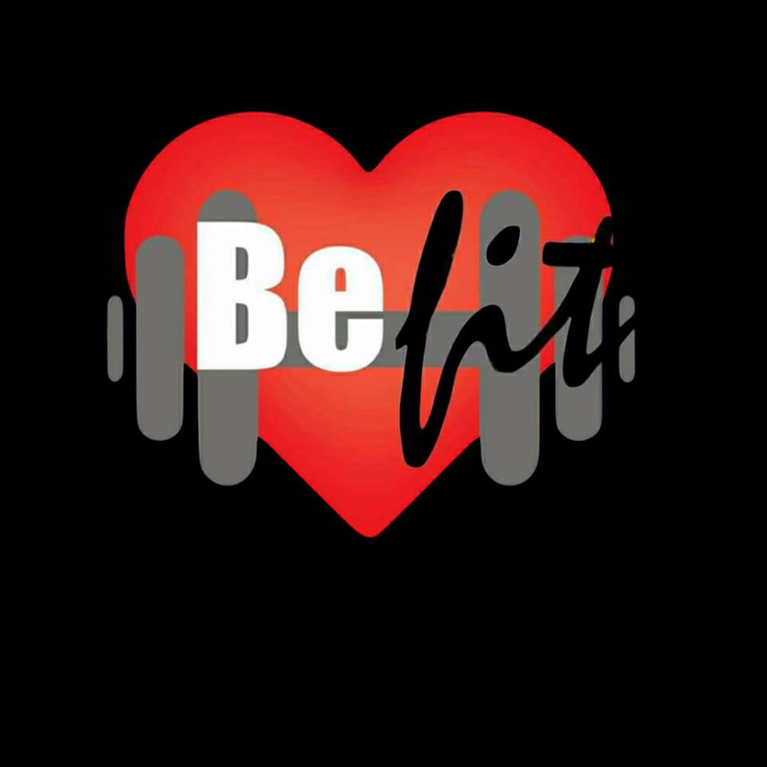

Bienvenidos al gym be fit un gym con muchisima Historia
En este gym encontraras instructores con muchisimo recorrido
a nivel profecional en el mundo fitnes teniendo muchos trofeos
los cuales podras ver en el mismo gimnacio, esto es una muestra
de su profecionalismo en el area fitnes.
Actualmente los dueños Migel Angel excampeon de fisiculturismo
a nivel Bolivia y representante de Bolivia en campeonatos mundiales
de fisiculturismo actualmente retirado de las competencias, pero activo
en el area de cooch fitnes con un historias perfecto ya que a todos sus
alumnos siempre salen campeones en su categoria entrenador 100/100.
La instructora Sarita, excampeona en el mundo fitnes a nivel Bolivia y
representante de Bolivia en competencias internacionales a demas campeona
en jujitsu, ahora se encuentra activa en el area de cooch, experta en
preparacion para las competencias femeninas con una experiencia amplia
en poses fitnes y en entrenamientos especificos para cada area de fitnes
entrenadora 100/100
El tercer instructor es hijo de Miguel Angel y Sarita el es Dario actualmente
compite y es campeon actual de Bolivia en el area de fisiculturismo natural
es campeon absoluto siguiendo invicto por años y representando a Bolivia en
campeonatos internacionales, actualmente a parte de ser competidor activo es
aprendiz para ser instructor fitness y en un futuro poder entrenar a las futuras
generaciones de fitness